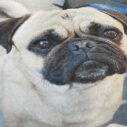
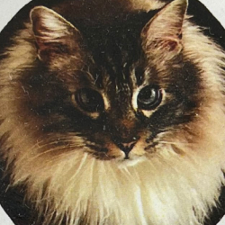
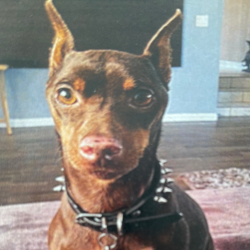

Lost & Found
¿Lo reconoces? Comunícate con nosotros

Pechera roja
Toma medicamento
Visto por última vez en colonia guerrero

Totoro, 8 años
Gato Macho. Ojos azul claro, Pelaje multicolor.
Panza, botas traseras y guantes delanteros blancos.
Visto por última vez en fraccionamiento Los Olivos (Hipódromo)
el Sábado 30 de Noviembre.

Honcho, 5 años
Esterilizado
Visto por última vez en Laderas de Monterey